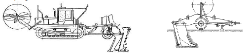
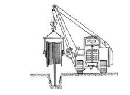

Kabeldöşəyən mexanizmlər vasitəsi ilə
Qazılmış xəndəklərə əl ilə
Optik kabelin torpaq altında eyni səviyyədə basdırılması üçün yerin səthi marşrut boyu maneələrdən təmizlənməli və hamarlanmalı, çökəkliklər doldurulmalıdır. Bundan sonra bıçaqlı kabeldöşəyən mexanizm və ya qurğu vasitəsilə 1-1,2 metr dərinlikdə optik kabel birbaşa torpağın altına qoyula bilər.
Bataqlıq sahələrdə təkərli kabeldöşəyən mexanizm və ya qurğulardan istifadə etmək mümkün olmadıqda, bataqlıqda çalışa bilən xüsusi mexanizmlərdən istifadə edilməlidir;
Kabeldöşəyən mexanizm və ya qurğu hərəkət edən zaman onun bıçağı torpağı yararaq keçid əmələ gətirir. Bıçağın ardınca gələn kassetin içindən diyircəklər üzərindən optik kabel torpağın altına basdırılır.
Kabeldöşəyən mexanizm və ya qurğunun gövdəsi üzərində qoyulmuş barabanın eyni sürətlə fırlanması mexanizm vasitəsilə avtomotik təmin olunmalı və kabelin dartılıb gərilməsinə yol verilməməlidir;
Qoşqu şəklində olan kabeldöşəyən qurğuların dartılması traktor vasitəsilə həyata keçirilir. Traktorların sayı torpağın kateqoriyasından, kabeldöşəyən mexanizmin növündən və kabelin basdırılma dərinliyindən asılıdır;
l-lV qrup torpaqlarda optik magistral kabel bir qayda olaraq 1-1,2 metr dərinlikdə torpağın altına basdırılmalıdır. Həmçinin V qrup torpaqlarda (sərt qayalıqlar) kabelin torpağa qoyulma dərinliyi 0,4 metr təşkil etməlidir;
Optik kabel torpağa basdırılarkən kabeldöşəyənin mexanizmin kassetinə əlavə qurğu bərkidilməklə, kabelin üzərindən 400 mm məsafədə sarı rəngli xəbərdaredici siqnal lenti qoyulmalıdır (əlavə kassetin bərkidilməsi mümkün olmazsa siqnal lenti əl ilə sərilir). Lentin üzərində “DİQQƏT! OPTİK KABEL”, “QAZMAQ QADAĞANDIR!”, “QAZMA! OPTİK KABEL XƏTTİ” sözləri əks olunmalıdır;
Hər hansı bir səbəbdən optik kabelin marşrutunda layihədən kənarlaşma olarsa, layihədən kənar işlərə dair akt tərtib edilməli və dəyişiklik icra eskizində öz əksini tapmalıdır (əlavə 3);
İşləri icra edərkən işçi heyəti fərdi mühafizə vasitələri ilə təmin edilməlidir. Bütün risklər nəzərə alındıqdan sonra işə başlanılmalıdır. Qazıntı işləri aparılan sahə təhlükəsizlik lenti ilə əhatə edilməli, müvafiq xəbərdaredici nişanlarla təchiz edilməlidir.
Yol və yolkənarı ərazilərdə işləyən işçilər reflektorlu gödəkçə ilə təmin olunmalıdırlar.
Müxtəlif səbəblərdən (yeraltı qurğuların olması, mexanizmin işləməsi üçün şəraitin və iqtisadi cəhətdən sərfəli olmaması) kabeldöşəyən mexanizmlərdən istifadə etmək mümkün olmadıqda, optik kabel qazılmış xəndəklərə əl ilə qoyulur;
Magistral optik kabellər əl ilə və ya mexanizmlə qazılmış xəndəklərdə 1-1,2 metr dərinlikdə basdırılmalıdır;
Hazır xəndəklərə optik kabel adətən nəqliyyat vasitəsində quraşdırılmış qaldırıcı qurğu üzərində olan və ya qaldırıcı mexanizmin qülləsindən asılmış barabandan verilir. Optik kabel barabandan birbaşa xəndəyə və ya xəndəyin kənarına sərilməli və xəndəyə döşənməlidir;
Nəqliyyat vasitəsinin xəndəyə yaxınlaşmasında maneə yaranarsa, qaldırıcı qurğu üzərində olan baraban xəndəyin kənarına qoyularaq əl ilə xəndəyə sərilməlidir;
Daşlı və qayalı bərk torpaqlarda xəndəyin dibi hamarlanmalı, optik kabelin altına və üstünə 50 mm qalınlığında yumşaq torpaq və qum yastığı səpilməlidir;
Optik kabellər xəndəyin dibinə sərbəst döşənməli, böyük əyilmələrə yol verilməməlidir;
Xəndəklər mexanizm və ya əl ilə doldurulduqdan sonra mərhələli şəkildə sıxlaşdırılmalıdır;
Tikinti uzunluğu 400 metrdən çox olan kabel trasının düzxətli hissəsində hər 100 metrdən
bir rabitə nişan dirəkləri quraşdırılmalıdır. Dəmir-beton nişan dirəkləri magistral optik
kabelin marşrutunun keçdiyi torpaq sahələri və yaşayış məntəqələrində
(şəhər əraziləri istisna)
hər bir optik qolçağın qarşısında, çay (kabelin sudan çıxan yerinə yaxın), dəmiyolu, neft, qaz və
su kəmərləri, kanalizasiya və istilik boruları, elektrik xəttləri və s. kəsişmələrdə, kabel trasının
döngələrində quraşdırılmalıdır.
Nişan dirəkləri 0,12x0,12x1,2 metr ölçüsündə olmalıdır. Dəmir-beton nişanların basdırılma dərinliyi 0,6 metr təşkil etməlidir.
Rabitə nişan dirəkləri kabel trasının orta xəttindən 0,1 metr yolun əks istiqamətinə doğru, yazılı tərəfi isə yolun hərəkət hissəsinə baxmaq şərtilə basdırılmalıdır. Dirəyin üstündə optik qolçağın nömrəsi, kabelin istiqamətini göstərən işarə və ya yazılar
qeyd olunmalıdır. Yazılar traffaret şəklində yazılmalı, şriftlərin ölçüsü 35 mm təşkil etməlidir;
İşləri icra edərkən işçi heyəti fərdi mühafizə vasitələri ilə təmin edilməlidir. Bütün risklər nəzərə alındıqdan sonra işə başlanılmalıdır. Qazıntı işləri aparılan sahə təhlükəsizlik lenti ilə əhatə edilməli, müvafiq xəbərdaredici nişanlarla təchiz edilməlidir. Yol və yolkənarı ərazilərdə işləyən işçilər reflektorlu gödəkçə ilə təmin olnmalıdırlar.
Magistral optik kabellərin birbaşa torpağa qoyulması işlərində optik qolçağın tipi layihələndirmə mərhələsində nəzərə alınmalıdır. Optik qolçaqlar birbaşa torpağa və ya xüsusi tikilmiş və quraşdırılmış quyularda yerləşdirilə bilər. Optik qolçaq üçün qazılmış çüxurların dərinliyi 1-1,2 metr təşkil etməlidir. Optik qolçaq üçün quraşdırılan və tikilmiş quyunun ölçüləri 600x600x500 mm təşkil etməlidir. Hər iki halda hər saxlanılan kabel ehtiyatı 10-12 metr təşkil etməlidir (istisna hallarda ehtiyat kabelin uzunluğu çox ola bilər). Kabelin ehtiyatı halqalar şəklində torpaq altında sərilməli və ya quyu daxilinə yerləşdirilməlidir;
Birbaşa torpağa basdırılan optik qolçaqlar (magistral optik kabellər üçün) korroziya əleyhinə xüsusi qoruyucu örtüyə (çuğun və ya plastik) malik olmalıdır;
Birbaşa torpağa basdırılan magistral optik kabellərin birləşmə nöqtələrində quraşdırılmış optik qolçaqlar üçün nişan dirəkləri nəzərə alınmalıdır. Quraşdırılan optik qolçaqların ətrafında dörd ədəd, kvadrat şəklində rabitə nişan dirəkləri basdırılmalıdır. Nişan dirəklərində optik qolçağın və optik kabelin nömrəsi əks olunmalıdır;
Xüsusi qoruyucu örtüyə və sıxılmaya dözümlü olmayan optik qolçaqları birbaşa torpaq altına basdırmaq olmaz. Əks halda 600x600x500 mm ölçülü quyulardan istifadə edilməlidir.